- scriptaspi.sh : le script qui permet de créer les aspirations des pages qui nous intéressaient. Lors de l'éxécution de ce script, un autre script est exécuté en parallèle :
- concordance.sh qui permet de créer les concordances du motif recherché lors de l'éxécution du script.
Extraction des données
Rédaction du script et aspirations :

Rédaction du script : :
Nous avons réalisé 2 scripts différents pour la constitution de nos corpus. Ces scripts ont été réalisés durant les séances de cours et au fil de nos exercices personnels.
Ces deux scripts sont :
Notre but premier a été de réaliser un script permettant de traiter nos URLs et d'obtenir des données sur celles-ci. Suite à ça nous avons voulu les représenter sous la forme d'un tableau html
Pour ce faire nous avons utilisé des commandes bash vu en cours.
Tout d'abord nous avons téléchargé le script traitement_url_base.sh puis nous avons installé et utilisé curl afin de completer ce script.
La commande curl nous a permis de récuperer l'entête de la reponse du serveur et donc de savoir si l'url etait valide ou non ! si c'est 200 c'est ok sinon non :c
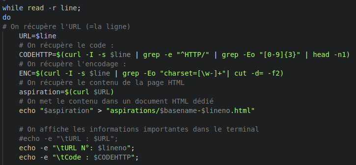Les entêtes qui nous ont interessées sont les suivantes :
- Le code HTTP
- Son encodage
Lorsque le contenu de la page URL n'est pas de l'UTF-8 nous sommes embetées , en effet le traitement d'une page non UTF-8 peut poser des problemes pour la lecture des accents. Il nous paraît egalement fastidieux de traiter des pages n'ayant pas le même encodage.
Pour eviter les problèmes nous le convertissons avec iconv pour n'avoir que de l'UTF-8.
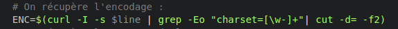Nos URLs vérifiées, nous voulons les stocker dans un tableau html afin d'avoir plus de visibilités et un recueil de données.
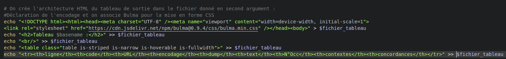
fermeture du tableau html avec l'intégralité des donnéees :
Après avoir traité nos URLs , nous avons pu passer à l'étape suivante: récuperer le contenu textuel de nos pages.
La commande Lynx nous permet de recuperer le contenu textuel d'une page
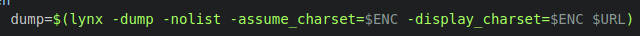Le but de notre projet est d'analyser un ou plusieurs mots, de ce fait nous avons commencé à nous soucier de ce mot. Nous avons ajouté un compteur permettant de compter le nombre d'occurence de nos mots dans les dumps
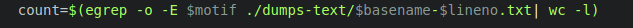Pour stocker les aspirations, dumps, contexte nous avons crée des dossiers permettant de stocker ces données et également necessaires au fonctionnement du script
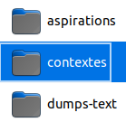Le traitement de l'url ne sera pas le même en fonction de son entête. En effet si il renvoit le code 200 nous allons incrementer son dump à une variable. A contrario si l'URL renvoi un autre code nous utiliseront un dump vide
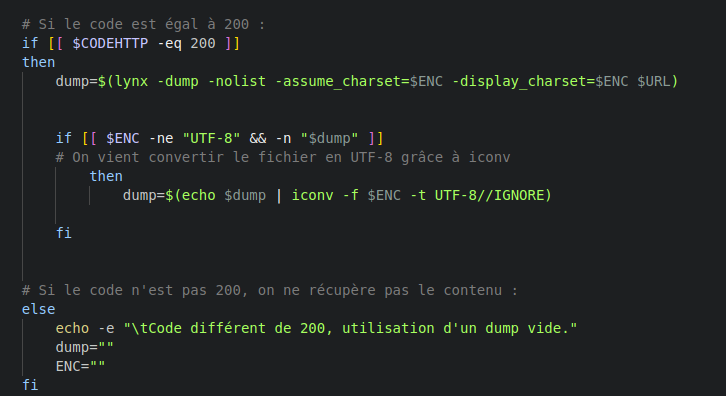L' aspiration des pages et dump textuel se font donc sur les URL ayant le code 200, ces données sont directement envoyées aux dossiers crées au préalable
 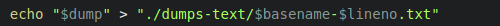
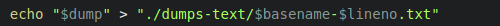
Pour ajouter le contexte du motif inséré par l'utilisateur , nous nous sommes documenté sur la manuel de 'grep' nous pouvons voir que les options A et B suivi d'un chiffre permettent de trouver ce qu'il y a après le mot et avant " after, before" le chiffre permet de mentionner la longueur de contexte que nous voulons en ligne.
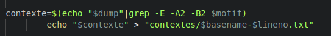Script Concordance
Suite à nos aspirations nous voulons créer un concordancier qui nous permettra de voir le contexte droit et gauche du motif.
Pour ce faire, nous utilisons la commande bash ci-dessous qui nous permet de lancer notre futur script de concordancier
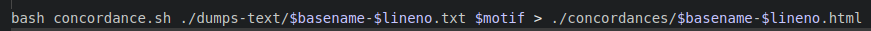Nous pouvons voir un fait interessant dans la dernière partie de la commande :
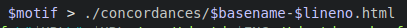Les données du script concordances seront envoyées dans un fichier nommé concordance. Il est donc primordial de créer ce dossier.
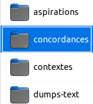Ce script contiendra deux arguments , le premier est le fichier dump : c'est sur ce ficher que ce produira l'analyse du contexte du motif, le deuxieme argument est le motif utilisé sur le scriptaspi.
Pour éviter les problèmes nous mettons la condition d'avoir 2 arguments pour lancer le script.

Nous voulons les resultats sous forme de tableaux. De ce fait dans le script concordance nous allons faire un tableau html.
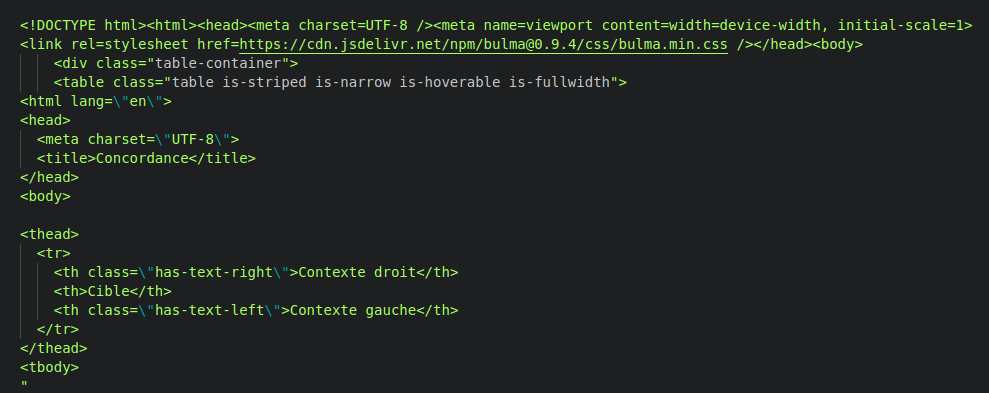Afin de mettre en forme le contexte droit et gauche nous utilisons la commande ci-dessous :
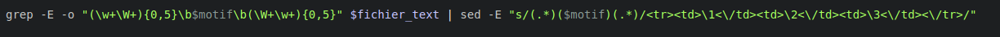Avec la fonction grep nous captons le contexte gauche du motif à l'aide d'une expresion régulière (\w+\W+){0,5} de même pour le contexte droit.
Suite à ca nous avons le contexte droit et gauche. Maintenant il faut l'ajouter à notre tableau de manière ordonnée
Maintenant interessons nous à la deuxieme partie de la commande:
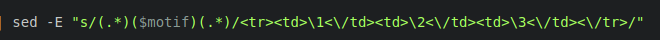Nous mettons 3 élèment entre parenthèse.
Les parenthèses nous permettent de completer notre tableau comme nous le voulons. En effet le contenu de la première partie peut être extrait en l'appelant 1, le deuxieme élèment qui est le motif sera deux , enfin la parenthèse se trouvant à sa gauche sera 3
Nous répartissons ces chiffres dans les colonnes du tableau en sachant que 1 est le contexte gauche , 2 le motif puis 3 le contexte droit.
Une fois cela fait nous avons notre concordancier qui a cet aspect :
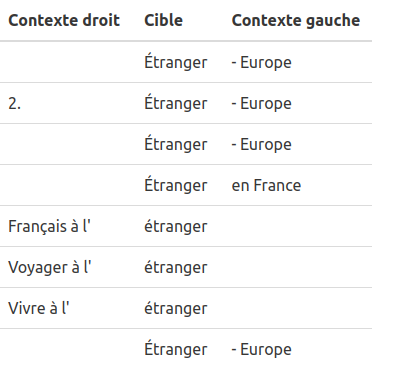